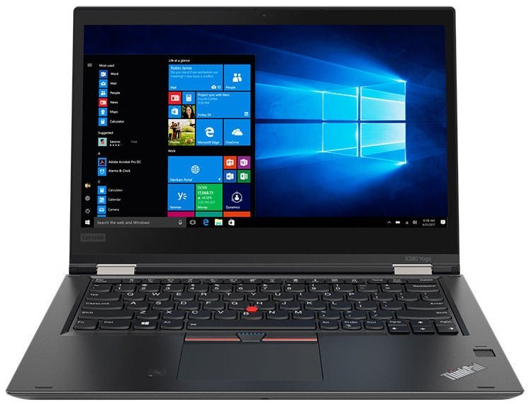

Welcome to nešiojamas kompiuteris
Nešiojami kompiuteriai kompiuteriai - Skelbiu.lt
2020.10.28 12:42
X Dėl geresnės Skelbiu.lt paslaugų kokybės naudojame slapukus (angl. cookies).
Naršydami toliau, patvirtinate, kad sutinkate su slapukais. Tai bet kada galėsite atšaukti, pakeisdami nustatymus. Skelbiu.lt slapukų politika . Lankomiausias
skelbimų portalas LT RU ( 0 ) Įsiminti skelbimai ( 0 ) Peržiūrėti skelbimai Paieškos ( 0 ) Prisijungti Registruotis Nešiojami kompiuteriai, Kompiuteriai (3532) Gauti naujus skelbimus: Ekrane El. paštu + Įdėti skelbimą Įsiminti skelbimai (0) Skelbimų: 3532 Atnaujinti viršuje Naujausi viršuje Atnaujinti viršuje Pigiausi viršuje Brangiausi viršuje
NEPRALEISKITE NAUJŲ SKELBIMŲ
Nešiojami kompiuteriai, Kompiuteriai
Gaukite naujus skelbimus į ekraną Gaukite naujusskelbimus el. paštu Vilnius, ... prieš 23 min. 4
Superkam Apple,hp,dell,acer ,Samsung Ir TT,taisom
NAUJAS LOMBARDAS SESKINES g.28(VIETOJ PASTO)tel.8-604-84444.ISPARDUOTUVES-LOMBARDU TINKLAS VILNIUJE IR KAUNE.VISA PARA.PALUKANOS NUO 2%,TAISOME TELEFONUS,PLANSETES,KOMPIUTERIUS IR KITA-SUPERKAME VISKAS KAS TURI KOMERCINE VERTE,LOMBARDAS... Būklė: naudota Ieško Vilnius prieš 1 val. 3Naujas Hp-14-dk0850no Amd Ryzen 5/4gb/256gb
NAUJAS GARANTIJA 12 MENESIU. HP Notebook - 14-dk0850no Ekranas: 14 FHD IPS anti-glare micro-edge Ekrano tipas: Neblizgus Procesorius:AMD Ryzen 5 3500U (2.1 GHz base clock, up to 3.7 GHz) Pagrindinė atmintis: 4 GB DDR4-2400 SDRAM iki 16gb... Būklė: nauja 400 € Vilnius prieš 2 d. 3MacBook Pro 13,3 (2020)
Parduodu Rugpjūčio mėn. pirktą, su 24 mėn garantija MacBook Pro (Touch Bar) 13.3 Space Gray (2020) Procesorius: Intel i5 1.4GHz RAM: 8GB Atmintis: 512GB Vaizdo plokštė: Intel Iris Plus 645 68 krovimo ciklai Būklė: naudota 1 250 € Vilnius prieš 3 val. 2Visa Lietuva Skubiai pirksiu MacBook kompiuteri
Skubiai pirksiu MacBook kompiuteri VlLNIUS KAUNAS PANEVEZYS UKMERGE JONAVA MARIJAMPOLE ALYTUS nauja / naudota Macbook pro 13 2015 2016 2017 2018 2019 Macbook pro 15 2015 2016 2017 2018 2019 su icloud gali buti Macbook air 13 2018 2019 Macbook... Būklė: nauja Ieško Vilnius prieš 2 val. 2Naudoti kompiuteriai su garantija 2020.10.22
Jeigu norite pamatyti kaip atrodo konkretus kopiuteris parašykite info@LaptopKing.lt ir mes atsiūsime nuotraukas. Vietoje galite apžiūrėti visus kompiuterius, vietoje ištestuoti ir įsigyti. *Pilnai paruošti darbui. *4-8GB RAM. *Visiems 3... Būklė: naudota 100 € Kaunas, ... prieš 4 val. 2Jokių Akcijų ! Tiesiog geriausios kainos ! .! .! .
Didžiausias naudotų nešiojamų ir stacionarių kompiuterių pasirinkimas ! Geriausią kainą GARANTUOJAME ! ! ! Kompiuteriai kiekvienam pagal poreikį ! Mūsų skelbimus rasite: www.ktgroup.lt Siunčiame į visus Lietuvos miestus NEMOKAMAI ! ... Būklė: naudota 75 € Kaunas, ... prieš 4 val. 2Perkantiems kompiuterį - Dovana pasirinktinai !
Perkantiems naudotą nešiojamą ar stacionarų kompiuterį (vertė virš 150 eur.), dovana pasirinktinai: * bevielė pelė * USB raktas Mus rasite M. K. Čiurlionio gatvė 29, Kaunas Suteikiama garantija. Išrašome PVM sąskaitas faktūras. ... Būklė: nauja 59 € Vilnius, ... prieš 2 d. 2Dell Xps patrauklūs pasiūlymai
Mūsų stiprybė didmena, todėl siūlome pasinaudoti galimybe įsigyti Dell XPS kompiuterius labai patrauklia kaina Lietuvoje. Visi kompiuteriai nauji su 24 mėn garantija fiziniams asmenims ir 12 mėn garantija juridiniams asmenims. Išrašome sąskaitas... Būklė: nauja 1 299 € Vilnius, ... prieš 2 d. 2Lenovo Thinkpad X1 Carbon Patraukliomis Kainomis
Siūlome įsigyti Lenovo ThinkPad X1 CARBON kompiuterinę įrangą labai patraukliomis kainomis. Visa kompiuterinė įranga su 1 arba 3 metų garantija. šiuo metu sandėlyje mes turime: Lenovo ThinkPad X1 CARBON 7th Gen Core i5-10210U 1.6GHz 256GB SSD... Būklė: nauja 1 400 € Kaunas, ... prieš 1 d. 2Nešiojamų kompiuterių supirkimas Apple ir kitų
Nešiojamų kompiuterių supirkimas Vilniuje, Kaune, Klaipėdoje, Šiauliuose. Po vieną ir urmu superkame naujus ir naudotus Apple ir kitų gamintojų kompiuterius. Kompiuteriai turi būti ne senesni nei 5 metų. Gali būti nauji ir naudoti ar su... Būklė: naudota Ieško Reklama Kaunas, ... prieš 2 val. 2 Parduota per 1 d.17 Gaming/ i7 4700/16gb /SSD+HDD /Full HD /Gtx !
Parduodamas naudotas nešiojamas kompiuteris: Modelis: MEDION ERAZER X7827 Intel i7 4700MQ 2.40GHz 16GB RAM 256GB SSD + 1TB (1000GB) HDD Vaizdo plokštės: Intel HD Graphics 4600 nVidia GeForce GTX 780M 4-12GB GDDR5 256-bit ! Ekranas: 17... Būklė: naudota 459 € Kaunas, ... prieš 4 val. 2Lenovo T470s / i5 6300 / 12gb / SSD / Touch / Fhd
Parduodamas naudotas nešiojamas kompiuteris: Modelis: Lenovo T470s Intel i5 6300U 2,50GHz 8GB DDR4 RAM 128GB SSD Vaizdo plokštė: Intel HD Graphics 520 Ekranas: 14 colių /matinis / LIEČIAMAS Jungtys: USB 3.0 x 3,USB c-type x 1, HDMI, LAN... Būklė: naudota 449 € Vilnius prieš 3 val. 2Parduodu MacBook Air
Parduodu gerai išlaikytą Macbook Air. Su dėže ir pakrovėju. Būklė: nauja 300 € Vilnius prieš 1 d. 2Lenovo Thinkpad X395 Naujas - 619eur
Parduodamas beveik naujas kompiuteris (buvo išpakuotas iš dežutės ) Lenovo ThinkPad X395 Black 13.3 /IPS Full HD/AMD Ryzen 5 PRO 3500U/RAM:16GB/SSD:256GB/AMD Radeon Vega 8/Windows 10 Pro/ Kaina 619 Eur Būklė: nauja 619 € Vilnius prieš 1 d. 2MacBook Pro 2011 i5 8gb 256ssd - 219eur
Parduodamas Apple MacBook Pro 13 kompiuteris. Procesorius Intel Core i5 8GB RAM 256GB SSD Baterija laiko Pakrovejas originalus Kaina 219 Eur Būklė: naudota 219 € Kaunas prieš 2 val. 217.3 i7-4810hq 16gb SSD+HDD, Gtx 870m 3gb
Parduodamas ASUS ROG G750JS 17.3" kaina nurodyta su garantijomis 6 mėnesių ir PVM. Tinka žaisti daugumą žaidimu ant vidutinių nustatymų, 17.3 1920*1080 Matinis ekranas Procesorius i7-4710HQ 2.5GHz, Max turbo dažnis 3.5GHz RAM 16GB SSD 128GB... Būklė: naudota 449 € Vilnius spalio 23 d. 2MacBook Pro 2015 i7 16gb 256 SSD retina
Bukle gera Pries metus iDeal pakeista baterija. 85 ciklai Geriau SMS Būklė: naudota 800 € Vilnius prieš 1 d. 2Acer Aspire E15 8gb RAM 1tb HDD i7-7500u
Parduodamas puikiai išlaikytas ir idealiai funkcionuojantis darbo, bei žaidimų kumpiuteris. Yra vaizdo kamera, Bluetooth ir WiFi ryšys. Operacine sistema: legali Windows 10 home 64-bit Ekranas: 15.6 FullHD Procesorius: Intel Core i7 7500U 2... Būklė: naudota 350 € Vilnius prieš 3 val. 1Perku MacBook Kompiuteri
Pastoviai Perku : Macbook pro 13 , Macbook pro 15 , Macbook pro 16 2015 , 2016 , 2017 , 2018 , 2019 , 2020 Macbook Air 13 2018 , Macbook Air 2019 , Macbook Air 13 2020 128gb , 256gb , 512gb i5 , i7 , i9 Domina su touch bar ir be touch bar ... Būklė: nauja Ieško Klaipėda prieš 4 val. 1Medion Erazer P7651 žaidimų kompiuteris
Medion Erazer P7651 Core i5-8250U 8GB 1TB + 128GB SSD GeForce GTX 1050 4GB 17.3 Inch Windows 10 Būklė: naudota 570 € Vilnius prieš 1 d. 1Lenovo Ideapad 510s "14 256gb 8gb i5-6200u
Parduodamas mylėtas ir saugotas kompiuteris. Techninės specifikacijos: Ekrano įstrižainė - 14" (1920x1080) CPU - Intel Core i5-6200U RAM - 8GB DDR4 GPU - Intel HD Graphics 520 SSD - 256GB Būklė 8.5/10 - visos funkcijos veikia be problemų,... Būklė: naudota 280 € Vilnius prieš 1 d. 12019 metų Hp Envy 15 X360 ,Geforce Mx250 4gb Gddr5
Aliuminio lydinio korpusas. Liečiamas ekranas, šviečianti klaviatūra. Persilenkia 360 laipsnių ir galima naudoti kaip plančetę. Bang&Olufsen garso sistema 15.6 IPS FHD 1920x1080, Touchscreen liečiamas ekranas Intel® Core... Būklė: naudota 619 € Vilnius prieš 1 d. 1Dell Xps 9360 i7, Qhd+ Touchscreen
Šviečianti klaviatūra 13.3 Infinity Edge IPS QHD+ 3200x1800, Touchscreen liečiamas ekranas Intel® Core® i7-7500U 2.70-3.50GHz procesorius 8Gb DDR4 Ram 256Gb SSD kietasis diskas Intel® HD Graphics 620 vaizdo... Būklė: naudota 569 € Tauragės r. prieš 1 d. 1Siūlykit kaina, Offer the price
Lenovo IdeaPad S145-15API Daugiau info telefonu, el. paštu arba per skelbiu chata. Jeigu pasiūlysit gera kaina dovanu Gaming mouse. Galėsi pasirinkti iš šitu skelbimu: https://www.skelbiu.lt/skelbimai/gaming-muose-50854089.html https://www... Būklė: naudota E. parduotuvės prekė Lenovo IdeaPad L340 Black (Juodas) | 15.6 , Intel Core i5... technorama.lt, bigbox.lt, rde.lt nuo 608 € E. parduotuvės prekė Asus X543MA-DM621 15.6 FHD N4000 4GB SSD256GB EN No OS Grey technorama.lt 377 € Daugiau prekių Kainos.lt » 1 2 3 4 5 6 Įsiminti skelbimai Įdėkite skelbimąPopuliarios paieškos:
gtx 1080 vilnius
gtx 980 vilnius
965m vilnius
980m vilnius
960m vilnius
gtx 1060 vilnius
gtx 1050 vilnius
940m vilnius
950m vilnius
940mx vilnius
640m vilnius
m265 vilnius
radeon 630 vilnius
radeon pro 450 vilnius
radeon pro 455 vilnius
Prisijunk ir rask savo įsimintus skelbimus visur – kompiuteryje, telefone, planšetėje ARBA Jungtis su Facebook Jungtis su Google Skelbiu.lt pagalba: +370 664 55727 Darbo laikas: I-V 08:20 - 17:00 Naudojimo taisyklės / D.U.K. Kontaktai Svetainės struktūra D I G I N E T